微积分（一）总结 PART III
本文简要梳理了微积分（一）的一些内容, 并记录一些套路.
一元函数的积分学
定积分的定义
设 \(f\) 在 \([a, b]\) 上有定义, 在 \([a, b]\) 间插入分点
\[ a=x_0<x_1<\cdots<x_{i-1}<x_i<\cdots <x_{n-1}<x_n=b. \]
称 \(\pi=\lbrace x_0, x_1, \cdots, x_n\rbrace\) 为 \([a, b]\) 的一个分划. 记 \(\Delta x_i=x_i-x_{i-1}, 1\le i\le n\), 记 \(\lambda=\max_{1\le i\le n} \Delta x_i\) 为分割 \(\pi\) 的模, 任取 \(\xi_i\in [x_{i-1}, x_i]\), 称
\[ \sigma=\sum_{i=1}^nf(\xi_i)\Delta x_i \]
为 \(f\) 在分割 \(\pi\) 下的黎曼和.
若
\[ I=\lim_{\lambda\to 0}\sum_{i=1}^nf(\xi_i)\Delta x_i \]
存在, 则称 \(f\) 在 \([a, b]\) 上黎曼可积, \(I\) 为 \(f\) 在 \([a, b]\) 上的定积分, 记作
\[ \int_a^bf(x)\mathrm dx=I. \]
若 \(a\ge b\), 规定
\[ \int_a^bf(x)\mathrm dx=-\int_b^af(x)\mathrm dx. \]
用极限的语言, 上述定义可写为:
\(\forall \varepsilon>0\), \(\exists \delta >0\), 使得对任意的分割 \(\pi\), 对任意选取的分点 \(\xi_i\in[x_{i-1}, x_i]\), 只要 \(\lambda(\pi)<\delta\), 都有 \[ |\sigma(D)-I|<\varepsilon. \]
则
\[ \int_a^bf(x)\mathrm dx=I. \]
定积分的存在性
可积的必要条件 若 \(f\) 在 \([a, b]\) 上可积, 则 \(f\) 在 \([a, b]\) 上有界.
证明
用反证法: 若 \(f\) 在 \([a, b]\) 无界, \(\forall M>0\), 适当选取分割 \(\pi\) 和分点 \(\xi_i, 1\le i\le n\), 并且 \(\xi_k\) 满足 \[ |f(\xi_k)|\ge \dfrac{1}{\Delta x_k}\left[M+\sum_{i=1, i\ne k}^nf(\xi_i)\Delta x_i\right]. \] 故 \[ \begin{aligned} |\sigma (\pi)|&=\left|\sum_{i=1}^nf(\xi_i)\Delta x_i\right| \\ &\ge |f(\xi_k)\Delta x_k|-\left|\sum_{i=1, i\ne k}^nf(\xi_i)\Delta x_i\right| \\ &\ge M. \end{aligned} \] 故由 \(G\) 的任意性可知, \(\sigma (\pi)\) 无极限, 故不可积.
达布和的定义 对一个分割 \(\pi=\lbrace x_0, x_1,\cdots, x_n\rbrace\), 设 \(m_i\) 是 \(f(x)\) 在 \([x_{i-1}, x_i]\) 的下确界, \(M_i\) 是 \(f(x)\) 在 \([x_{i-1}, x_i]\) 的上确界, 称 \(w_i=M_i-m_i\) 为 \(f(x)\) 在 \([x_{i-1}, x_i]\) 上的振幅. 称
\[ s=\sum_{i=1}^nm_i\Delta x_i\ \textnormal{与}\ S=\sum_{i=1}^nM_i\Delta x_i \]
分别为达布下和与达布上和. 容易发现对任意分点得到的 \(\sigma\), 都有 \(s\le \sigma\le S\).
达布和的性质
- 性质 1 对于一个确定的分割, 有 \[ \begin{aligned} S&=\sup\left\lbrace\sum_{i=1}^nf(\xi_i)\Delta x_i: \xi_i\in[x_{i-1}, x_i], 1\le i\le n\right\rbrace, \\ s&=\inf\left\lbrace\sum_{i=1}^nf(\xi_i)\Delta x_i: \xi_i\in[x_{i-1}, x_i], 1\le i\le n\right\rbrace. \end{aligned} \]
证明
由于 \(\forall \sigma, \sigma \le S\), 故 \(S\) 为上界.
由于 \(M_i\) 为 \(f(\xi_i), \xi_i\in[x_{i-1}, x_i]\) 的上确界, 故 \(\forall \varepsilon>0\), \(\exists \xi_i\in[x_{i-1}, x_i]\), 满足 \(f(\xi_i)> M_i-\dfrac{\varepsilon}{b-a}\), 故 \[ \sum_{i=1}^nf(\xi_i)\Delta x_i> \sum_{i=1}^nM_i\Delta x_i-\varepsilon. \] 即存在 \(\sigma_0\) 使得 \(\sigma_0> S-\varepsilon\).
故 \(S\) 为上确界, 同理 \(s\) 为下确界.
- 性质 2 对一个给定的分割, 增加新的分点, 则下和不减, 上和不增.
证明
只需对增加一个分点的情况证明, 设增加的分点为 \(\bar x\), 且 \(x_0<x_1<\cdots<x_{k-1}<\bar x<x_k<\cdots<x_n\). 则原上和 \[ S=\sum_{i=1, i\ne k}^nM_i\Delta x_i+M_k\Delta x_k. \] 新的上和 \[ S'=\sum_{i=1, i\ne k}^nM_i\Delta x_i+M'_k(\bar x-x_{k-1})+M''_k(x_k-\bar x). \] 由于 \(M'_k\le M_k\), \(M''_k\le M_k\), 有 \(S'\le S\). 同理，\(s'\ge s\).
- 性质 3 对任意两个分割 \(\pi_1, \pi_2\), 有 \(s(\pi_1)\le S(\pi_2)\).
证明
若 \(\pi_1, \pi_2\) 相同, 显然. 否则, 设 \(\pi\) 为合并了 \(\pi_1, \pi_2\) 的分点的分割.
那么, \(\pi\) 可以视为 \(\pi_1\) 或 \(\pi_2\) 增加分点得到.有性质 \(2\) 可知, \(s(\pi_1)\le s(\pi)\le S(\pi)\le S(\pi_2)\), 得证.
- 性质 4 对一切分割 \(\pi\), \(\lbrace s\rbrace\) 有上界 \(I_*\), \(\lbrace S\rbrace\) 有下界 \(I^*\), 且 \(s(\pi_1)\le I_*\le I^*\le S(\pi_2)\). \(I_*\) 和 \(I^*\) 分别称为 \(f(x)\) 在 \([a, b]\) 上的下积分和上积分.
证明
根据 性质 3, 任意 \(S\) 都是 \(\lbrace s\rbrace\) 的上界, 故有上确界 \(I_*\). 故 \(\forall s\), \(s\le I_*\). 同理, \(\lbrace S\rbrace\) 有下确界 \(I^*\), 且 \(\forall S\), \(I^*\le S\). 由于 \(\forall S\), \(S\) 是 \(\lbrace s\rbrace\) 的上界, 故 \(I_*\le S\), 故 \(I_*\) 是 \(\lbrace S\rbrace\) 的一个下界, 故 \(I_*\le I^*\), 综合可得 \(\forall s, S\), \(s\le I_*\le I^*\le S\).
可积的充要条件 \(f(x)\) 在 \([a, b]\) 可积的充分必要条件是 \(f(x)\) 在 \([a, b]\) 有界且 \[ \lim_{\lambda\to 0}(S-s)=0. \] 或者后一条件也可以写为 \[ \lim_{\lambda\to 0}\sum_{i=1}^n\omega_i\Delta x_i=0. \]
用 \(\varepsilon-\delta\) 语言写为: \(\forall \epsilon>0\), \(\exists \delta>0\), 对任意模 \(\lambda<\delta\) 的分割, 均有 \[ \sum_{i=1}^n\omega_i\Delta x_i<\varepsilon. \]
证明
必要性 由 \(f(x)\) 可积知 \(f(x)\) 有界, 且 \(\forall \varepsilon>0\), \(\exists \delta >0\), 对任意分割 \(\pi\) 满足 \(\lambda(\pi)<\delta\) 时, 有 \(|\sigma-I|<\varepsilon\), 即 \(I-\varepsilon<\sigma<I+\varepsilon\).
又 \(s=\inf\lbrace \sigma\rbrace\), \(S=\sup\lbrace \sigma\rbrace\), 有 \(I-\varepsilon\le s\le S\le I+\varepsilon\),
故 \(\lim_{\lambda\to 0}S=\lim_{\lambda\to 0}s=0\), 从而 \[ \lim_{\lambda\to 0}(S-s)=0. \] 充分性 由上知 \(s\le I_*\le I^*\le S\), 故 \(0\le I^*-I_*\le S-s\).
由 \(\lim_{\lambda\to 0}(S-s)=0\), 得 \(I^*=I_*\)(设为 \(I\)).
由于 \(s\le I\le S\) 且 \(s\le \sigma\le S\), 有 \(|\sigma-I|\le S-s<\varepsilon\).
故可积, 且积分为 \(I\).
常见的可积函数
- 在 \([a, b]\) 上的连续函数可积.
证明
由于 \(f(x)\) 在 \([a, b]\) 连续, 故在 \([a, b]\) 有界且一致连续.
\(\forall \varepsilon>0\), \(\exists \delta>0\), 对 \(\lambda<\delta\) 的任意分割, 在任意 \([x_{i-1}, x_i]\) 中的任意两点 \(x_1, x_2\) 均满足 \(|x_1-x_2|\le \lambda<\delta\). 所以, 由一致连续性, 有 \(|f(x_1)-f(x_2)|<\dfrac{\varepsilon}{2(b-a)}\).
则 \(\omega_i=\sup\lbrace|f(x')-f(x''): x',x''\in[x_{i-1}, x_i]\rbrace\le \dfrac{\varepsilon}{2(b-a)}<\dfrac{\varepsilon}{b-a}\).
故 \[ \sum_{i=1}^n\omega_i\Delta x_i<\dfrac{\varepsilon}{b-a}=\sum_{i=1}^n\Delta x_i=\varepsilon. \] 故 \(\lim_{\lambda\to 0}\sum_{i=1}^n\omega_i\Delta x_i=0\), \(f\) 在 \([a, b]\) 可积.
- 在 \([a, b]\) 上只有有限个间断点的有界函数是可积的.
若 \(f\) 在 \([a, b]\) 上除有限个第一类间断点外都是连续的, 则称 \(f\) 为分段连续函数. 此定理的一个更弱的形式为, 分段连续函数是可积的.
证明
设 \(f\) 在 \([a, b]\) 上的振幅为 \(\Omega\), 共有 \(k\) 个间断点.
\(\forall \varepsilon>0\), \(\exists \delta >0\), 对任意模 \(\lambda<\min\left\lbrace\dfrac{s}{4k\Omega}, \delta\right\rbrace\) 的分割来说, 把 \(\sum_{i=1}^n\omega_i\Delta x_i\) 分为两部分 \[ \sum_{i=1}^n\omega_i\Delta x_i=\sum_{i\in T}\omega_i\Delta x_i+\sum_{i\notin T}\omega_i\Delta x_i, \] 其中 \(T\) 是所有包含了间断点的指标集.
对于前者: 由于 \(|T|\le 2k\), 故 \[ \sum_{i\in T}\omega_i\Delta x_i\le \Omega\cdot 2k \cdot \lambda<\dfrac{\varepsilon}{2}. \] 对于后者, 是若干个闭区间上连续函数的黎曼和的和, 由之前的证明可知, \[ \sum_{i\notin T}\omega_i\Delta x_i\le \dfrac{\varepsilon}{2}. \] 综合可知, \[ \sum_{i=1}^n\omega_i\Delta x_i<\varepsilon. \] 故 \(f(x)\) 在 \([a, b]\) 上可积.
- 在 \([a, b]\) 上单调有界的函数可积.
证明
不妨设 \(f(x)\) 在 \([a, b]\) 单调递增. 在区间 \([x_{i-1}, x_i]\) 有 \(\omega_i=f(x_i)-f(x_{i-1})\).
\(\forall \varepsilon>0\), 取 \(\delta=\dfrac{\varepsilon}{f(b)-f(a)}\), 对于模 \(\lambda<\delta\) 的分割来说, 有 \[ \sum_{i=1}^n\omega_i\Delta x_i<\delta \sum_{i=1}^nw_i=\varepsilon. \] 故 \(f(x)\) 在 \([a, b]\) 上可积.
定积分的性质
- 线性性
\[ \int_a^b (pf(x)+qg(x))\mathrm dx=p\int_a^bf(x)\mathrm dx+q\int_a^bg(x)\mathrm dx. \]
- 区间可加性, 在三个积分均可积的前提下, 有
\[ \int_a^b f(x)\mathrm dx=\int_a^c f(x)\mathrm dx+\int_c^b f(x)\mathrm dx. \]
证明
先证明 \(a< c < b\) 的情况. 在 \([a, b]\) 可积的前提下证明子区间可积(用振幅), 再以 \(c\) 为分点, 取极限.
然后其它情况可以取不同的点作为分点得证.
设 \(f, g\) 在 \([a, b]\) 上可积, 且 \(f(x)\ge g(x)\), 则 \[ \int_a^b f(x)\mathrm dx\ge \int_a^bg(x)\mathrm dx. \]
若 \(f\) 在 \([a, b]\) 上连续, 且 \(f(x)\ge 0, f(x)\not\equiv 0\), 则 \[ \int_a^b f(x)\mathrm dx>0. \]
证明
对性质 3, 由极限的性质易得.
对性质 4, 不妨设有一点 \(x_0\) 满足 \(f(x_0)\ge 0\), 则由于连续性, 存在 \(U(x_0, \delta)\) 邻域(不妨设 \(x_0\) 是内点), 对邻域内的 \(x\) 有 \(f(x)\ge \dfrac{f(x_0)}{2}\). 那么 \[ \begin{aligned} \int_a^bf(x)\mathrm dx&=\int_a^{x-\delta/2}f(x)\mathrm dx+\int_{x-\delta/2}^{x+\delta/2}f(x)\mathrm dx+\int_{x+\delta/2}^bf(x)\mathrm dx \\ &\ge 0+\int_{x-\delta/2}^{x+\delta/2}\dfrac{f(x_0)}{2}\mathrm dx+0 \\ &=\dfrac{\delta f(x_0)}{2}>0. \end{aligned} \] 若 \(x\) 是端点, 类似可得.
- 若 \(f\) 在 \([a, b]\) 上可积, 则 \(|f|\) 在 \([a, b]\) 上也可积, 且 \[ \left|\int_a^bf(x)\mathrm dx\right|\le \int_a^b|f(x)|\mathrm dx. \]
若 \(|f|\) 在 \([a, b]\) 上可积, 则称 \(f\) 在 \([a, b]\) 上绝对可积, 反之不一定成立.
证明
可积性: 由三角不等式易得 \(\omega(|f|)\le \omega(f)\), 故容易证得可积.
由 \(-|f(x)|\le f(x)\le |f(x)|\), 容易得到 \(-\int |f(x)|\le \int f(x)\le \int |f(x)|\), 从而 \(|\int f(x)|\le \int |f(x)|\).
- 若 \(f, g\) 在 \([a, b]\) 上可积, 则 \(f\cdot g\) 在 \([a, b]\) 上也可积, 但一般地, 积的定积分不等于定积分的积.
证明
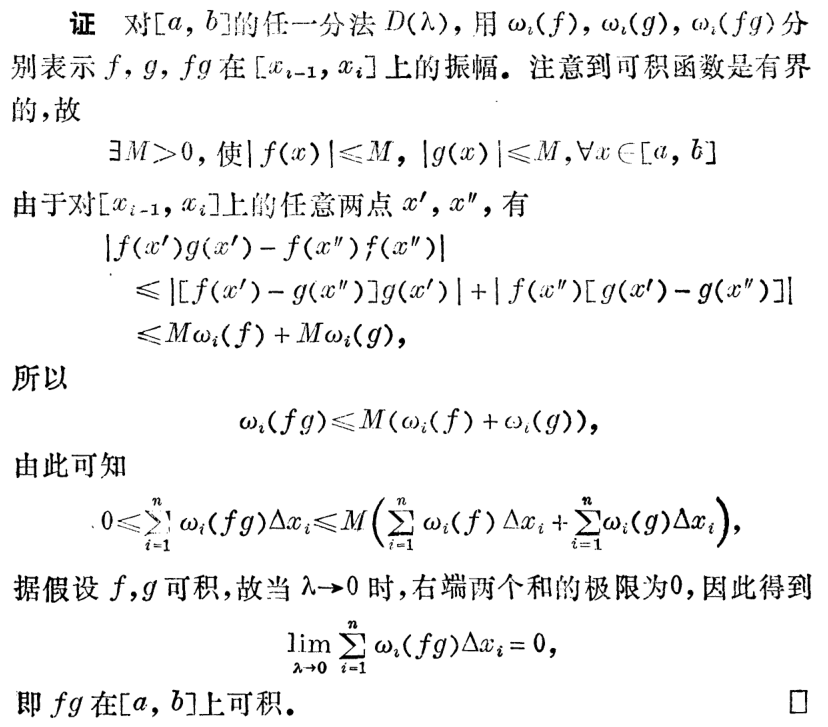
(积分第一中值定理) 若 \(f, g\) 在 \([a, b]\) 上可积, \(g\) 可积且在 \([a, b]\) 上定号, \(f\) 的一个上下界分别为 \(M\) 和 \(m\), 那么
- 存在 \(\mu\in [m, M]\) 使得 \[ \int_a^bf(x)g(x)\mathrm dx=\mu\int_a^bg(x)\mathrm dx. \] 特别地, 若 \(g(x)\equiv 1\), 则 \[ \int_a^bf(x)\mathrm dx=\mu(b-a). \]
- 若进一步地, \(f, g\) 在 \([a, b]\) 上连续, 那么存在 \(\xi\in(a, b)\) 使得 \[ \int_a^b f(x)g(x)\mathrm dx=f(\xi)\int_a^bg(x)\mathrm dx. \] 特别地, 若 \(g(x)\equiv 1\), 则 \[ \int_a^b f(x) \mathrm dx=f(\xi)(b-a). \]
书上的证明是证明了若 \(f\) 连续则 \(\xi\) 可以取到闭区间. 若 \(f, g\) 均连续, 那么 \(\xi\) 在开区间内也可以做到! 其实若 \(f\) 连续, \(\int_a^b g(x)\mathrm dx\ne 0\), 也可以推出 \(\xi\) 在开区间内可以取到.
证明
对于第一部分: 不妨设 \(g(x)\ge 0\), 那么 \[ \int_a^bg(x)\ge 0. \] 由于 \(m\le f(x)\le M\), 有 \(mg(x)\le f(x)g(x)\le Mg(x)\). 故 \[ m\int_a^bg(x)\mathrm dx\le \int_a^bf(x)g(x)\mathrm dx\le M\int_a^bg(x)\mathrm dx. \] 于是存在 \(\mu\in [m, M]\) 使得 \[ \int_a^bf(x)g(x)\mathrm dx=\mu\int_a^b g(x)\mathrm dx. \] 对于第二部分: 有三种情况.
若想证 \(\xi\) 取闭区间上的情况, 利用介值定理即可.
若想证 \(\xi\) 取开区间上, 在 \(f, g\) 连续的条件下, 那么先讨论 \(m\) 和 \(M\) 的关系, 再利用上面的性质 4 即证, 或者你可以用微分中值定理.
若想证 \(\xi\) 取开区间上, 在 \(g\) 可积且 \(\int_a^bg(x)\mathrm dx\ne 0\) 的条件下, 那么你可以看这个回答.
- 施瓦兹不等式: 若 \(f, g\) 在 \([a, b]\) 上可积, 则
\[ \left(\int_a^b f(x)g(x)\mathrm dx\right)^2\le \int_a^b f^2(x)\mathrm dx\cdot \int_a^bg^2(x)\mathrm dx. \]
原函数、变上限积分与不定积分
设 \(f\) 在 \(I\) 上有定义. 如果在 \(I\) 上存在 \(F\) 使得
\[ F'(x)=f(x), \forall x\in I\ \textnormal{或}\ \mathrm dF(x)=f(x)\mathrm dx, \]
则称 \(F\) 是 \(f\) 在区间 \(I\) 上的一个原函数.
变上限积分 设 \(f\) 在 \(I\) 上可积, \(a\in I\), 则定义
\[ \varPhi(x)=\int_a^x f(t)\mathrm dt \]
是 \(I\) 上的一个关于 \(x\) 的函数, 称为变上限积分.
变上限积分的连续性 若 \(f\) 在 \(I\) 上可积, 则 \(\varPhi\) 在 \(I\) 上连续.
证明
由于 \(f\) 在 \(I\) 上可积, 则 \(f\) 在 \(I\) 上有界, 设界为 \(M\).
\(\forall \varepsilon>0\), 取 \(\delta=\dfrac{\varepsilon}{M}\), 则当 \(|\Delta x|< \delta\) 时, 有 \[ \begin{aligned} |\varPhi(x+\Delta x)-\varPhi(x)|&=\left|\int_a^{x+\Delta x}f(t)\mathrm dt - \int_a^x f(t)\mathrm dt\right| \\ &=\left|\int_x^{x+\Delta x}f(t)\mathrm dt\right| \\ &=|\mu|\cdot \Delta x\ (|\mu|\le M) \\ &\le \varepsilon. \end{aligned} \] 故 \(\varPhi\) 在 \(I\) 上连续.
变上限积分可导的充分条件 若 \(f\) 在 \(I\) 上连续, 则 \(\varPhi\) 在 \(I\) 上可导, 且 \(\varPhi'(x)=f(x)\).
证明
由于 \[ \begin{aligned} \dfrac{\varPhi(x+\Delta x)-\varPhi(x)}{\Delta x}&=\dfrac{\int_x^{x+\Delta x}f(t)\mathrm dt}{\Delta x} \\ &=\dfrac{f(\xi)\Delta x}{\Delta x} \\ &=f(\xi), \end{aligned} \] 其中 \(\xi\) 位于 \(x\) 和 \(x+\Delta x\) 之间. 当 \(\Delta x\to 0\) 时, 有 \(\xi\to x\).
故 \[ \varPhi'(x)=\lim_{\Delta x\to 0}\dfrac{\varPhi(x+\Delta x)-\varPhi(x)}{\Delta x}=\lim_{\xi\to x}f(\xi)=f(x). \]
变上限积分在一点处可导的充分条件 若 \(f\) 在 \(I\) 上可积, 在 \(x_0\in I\) 上连续, 则 \(\varPhi\) 在 \(x_0\) 处可导, 且 \(\varPhi'(x_0)=f(x_0)\).
证明
\(\forall \varepsilon>0\), \(\exists \delta >0\), 当 \(|x-x_0|<\delta\) 时, 有 \(|f(x)-f(x_0)|<\varepsilon\).
从而 \[ \begin{aligned} \left|\dfrac{\varPhi(x_0+\Delta x)-\varPhi(x_0)}{\Delta x}-f(x_0)\right|&=\left|\dfrac{\int_{x_0}^{x_0+\Delta x}f(t)\mathrm dt-f(x_0)\Delta x}{\Delta x}\right| \\ &=\left|\dfrac{\int_{x_0}^{x_0+\Delta x}(f(t)-f(x_0))\mathrm dt}{\Delta x}\right| \\ &\le \dfrac{\int_{x_0}^{x_0+\Delta x}|f(t)-f(x_0)|\mathrm dt}{\Delta x} \\ &< \dfrac{\int_{x_0}^{x_0+\Delta x}\varepsilon\mathrm dt}{\Delta x}=\varepsilon \end{aligned} \] 故 \(\varPhi'(x_0)=f(x_0)\).
连续函数的变上限积分是一个原函数 即若 \(f(x)\) 在 \(I\) 上连续, 则其变上限积分 \(\varPhi(x)=\int_a^xf(t)\mathrm dt\) 满足 \[ \varPhi'(x)=f(x), \] 故任意连续函数都有原函数.
然而, 可积与存在原函数之间没有任何关联. 可积可能不存在原函数, 存在原函数也不一定可积.
例如, 根据达布定理, 若 \(f(x)\) 在区间内有定义且存在第一类间断点, 则其不存在原函数, 但它可以是可积的.
而存在原函数的函数不可积, 可见此回答.
不定积分/全部原函数 若 \(F(x)\) 是 \(f(x)\) 的一个原函数, 则 \(f(x)\) 的全部原函数可表示为 \(F(x)+C\), \(C\) 为任意常数, 称为 \(f(x)\) 的不定积分, 记为
\[ \int f(x)\mathrm dx=F(x)+C. \]
\(f(x)\) 的不定积分是一族互相只差常数的关于 \(x\) 的函数.
有性质如下:
\[ \begin{aligned} \left(\int f(x)\mathrm dx\right)'&=f(x), &\mathrm d\int f(x)\mathrm dx&=f(x)\mathrm dx, \\ \int F'(x)\mathrm dx&=F(x)+C, &\int \mathrm dF(x)&=F(x)+C. \end{aligned} \]
牛顿-莱布尼兹公式
设 \(f\) 在 \(I\) 上连续, \(F\) 是 \(f\) 的一个原函数, 若 \(a, b\in I\), 则
\[ \int_a^b f(x)\mathrm dx=F(b)-F(a)=F(x)\bigg |_a^b. \]
其实, 把条件弱化为 \(f\) 在 \(I\) 上可积亦成立.
证明
若条件为连续 可知变上限积分 \[ \varPhi(x)=\int_a^xf(t)\mathrm dt \] 是 \(f\) 的一个原函数, 那么 \(\varPhi(x)=F(x)+C\). 分别代入 \(x=a\) 和 \(x=b\), 有 \[ \begin{aligned} 0&=F(a)+C \\ \int_a^bf(t)\mathrm dt&=F(b)+C \end{aligned} \] 故 \[ \int_a^bf(x)\mathrm dx=F(b)-F(a). \] 若条件为可积 不妨设 \(a< b\). 作 \([a, b]\) 的分割为 \(a=x_0<x_1<\cdots<x_{i-1}<x_i<\cdots<x_n<b\), 那么 \[ F(b)-F(a)=\sum_{i=1}^n(F(x_i)-F(x_{i-1}))=\sum_{i=1}^nf(\xi_i)\Delta x_i. \] 其中 \(\xi_i\in (x_{i-1}, x_i)\). 取极限得 \[ \int_a^bf(x)\mathrm dx=F(b)-F(a). \]
从而定积分的计算可以转化为不定积分的计算.
换元积分法
设 \(f\) 在区间 \(I\) 上连续, \(x=\varphi(t)\) 在区间 \(J\) 上有连续导数, 且 \(\varphi(J)\subseteq I\), 则有 \[ \int f(x)\mathrm dx=\int f(\varphi(t))\mathrm d\varphi(t)=\int f(\varphi(t))\varphi'(t)\mathrm dt \]
证明
设 \(F\) 是 \(f\) 在 \(I\) 上的一个原函数, 那么求导得 \[ \dfrac{\mathrm d}{\mathrm dt} F(\varphi(t))=f(\varphi(t))\varphi'(t). \]
故 \(F\circ \varphi\) 是 \((f\circ \varphi)\varphi'\) 在 \(J\) 上的一个原函数, 故 \[ \int f(\varphi(t))\varphi'(t)=F(\varphi(t))+C=\int f(x)\mathrm dx. \]
由上述定理可以引申出:
不定积分的凑微分法 使用条件: 没啥条件.
不定积分的变量替代法 使用条件: 替代的 \(x=\varphi(t)\) 在区间上连续可导且存在反函数(代回), 故要求单调.
定积分的的凑微分法 使用条件: 没啥条件. 但是要注意凑微分后的上下限保持不变(积分变量不变).
定积分的变量替代法 使用条件: 替代的 \(x=\varphi(t)\) 在区间上连续可导, 不过因为不用代回, 所以不要求有反函数. 注意要改变上下限.
一些常用结论:
- 对于周期函数 \(f(x)=f(x+T)\), 有 \[ \int_a^{a+nT}f(x)\mathrm dx = n\int_b^{b+T}f(x)\mathrm dx. \]
- 对于奇函数 \(f(x)=-f(-x)\), 有 \[ \int_{-a}^af(x)\mathrm dx = 0. \] (注意需要是常义积分)
- 对于偶函数 \(f(x)=f(-x)\), 有 \[ \int_{-a}^af(x)\mathrm dx = 2\int_0^{a}f(x)\mathrm dx=2\int_{-a}^0f(x)\mathrm dx. \]
分部积分法
设 \(u\) 和 \(v\) 在区间 \(I\) 内有连续导数, 则有
\[ \int u(x)\mathrm dv(x)=u(x)v(x)-\int v(x)\mathrm du(x). \]
或有定积分形式为:
\[ \int_a^bu(x)\mathrm dv(x)=u(x)v(x)\bigg|_a^b-\int_a^b v(x)\mathrm du(x). \]
证明
由乘积的求导公式可得.
常见的分部积分的技巧:
- 幂函数与 \(e^x, \sin x, \cos x\) 等的乘积, 把后者放到 \(\mathrm d\) 里面去.
- 幂函数与对数函数、反三角函数、反双曲函数的乘积， 把前者放到 \(\mathrm d\) 后面去.
- 分母有 \(f^2(x)\) 的形式, 可以考虑把 \(1/f(x)\) 放到 \(\mathrm d\) 后面去.
基本积分表
展开
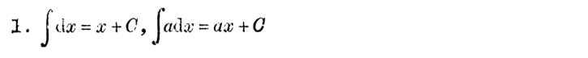
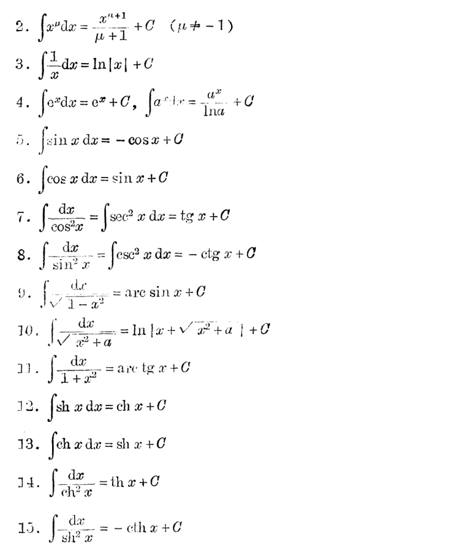
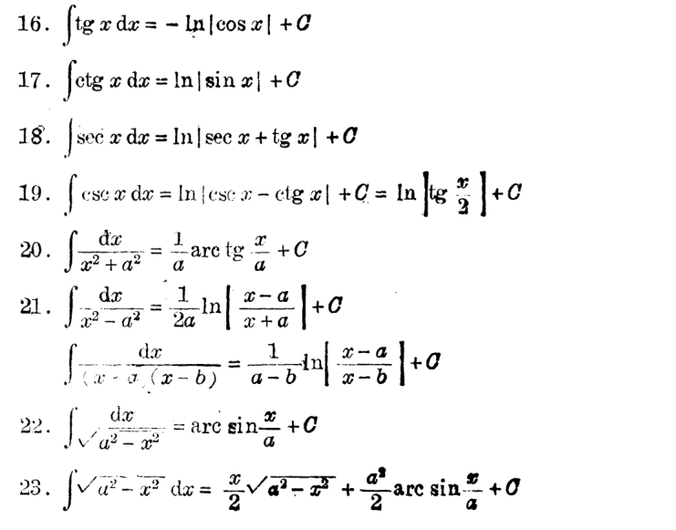
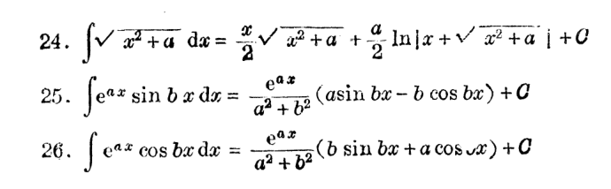
有理分式函数积分与有理三角函数的积分
前置知识 一个积分的算法: 求 \[ I_n=\int\dfrac{\mathrm dx}{(x^2+a^2)^n}. \]
求法
由于 \[ \begin{aligned} I_n&=\int\dfrac{\mathrm dx}{(x^2+a^2)^n} \\ &=\dfrac{x}{(x^2+a^2)^n}+2n\int\dfrac{x^2\mathrm dx}{(x^2+a^2)^{n+1}}. \\ &=\dfrac{x}{(x^2+a^2)^n}+2n(I_n-a^2I_{n+1}). \end{aligned} \] 故 \[ I_{n+1}=\dfrac{1}{2na^2}\left(\dfrac{x}{(x^2+a^2)^n}+(2n-1)I_n\right). \]
有理函数积分的系统方法
- 设对 \(f(x)=\dfrac{P(x)}{Q(x)}\) 积分, 其中 \(P(x), Q(x)\) 均是多项式. 无妨设 \(P(x)\) 的次数小于 \(Q(x)\) 的次数(否则可以提出容易积分的多项式并变成真分式), 且 \(Q(x)\) 为首一多项式.
- 把 \(Q(x)\) 在实数范围内分解, 变成 \[ Q(x)=\prod_i\dfrac{1}{(x-x_i)^{\lambda_i}}\cdot \prod_j\dfrac{1}{(x^2+p_jx+q_j)^{\mu_j}}. \] 其中第二项的所有的分母 \(\Delta<0\).
- 用待定系数法把 \(\dfrac{P(x)}{Q(x)}\) 拆成一系列和:
- 对于每一个 \(Q(x)\) 的因式 \(\dfrac{1}{(x-x_i)^{\lambda_i}}\), 相应地设出 \(\sum\limits_{1\le k\le \lambda_i}\dfrac{A_k}{(x-x_i)^k}\) 加入到和中.
- 对于每一个 \(Q(x)\) 的因式 \(\dfrac{1}{(x^2+p_jx+q_j)^{\mu_j}}\), 相应地设出 \(\sum\limits_{1\le k\le \mu_j}\dfrac{B_kx+C_k}{(x^2+p_jx+q_j)^k}\) 加入到和中.
- 对每一项分别积分.
- 对于 \(\dfrac{A_k}{(x-x_i)^k}\), 积分显然.
- 对于 \(\dfrac{B_kx+C_k}{(x^2+p_jx+q_j)^k}\), 若 \(B_k\ne 0\), 可以在分子上凑 \(B_kx+C_k=\dfrac{B_k}{2}(2x+p_j)+X\), 拆成两部分, 前部分是 \(\dfrac{B_k}{2}\int \dfrac{\mathrm d(x^2+p_jx+q_j)}{(x^2+p_jx+q_j)}\) 的形式, 而后部分是 \(B_k=0\) 的情形(见下).
- 对于 \(\dfrac{C_k}{(x^2+p_jx+q_j)^k}\), 分母配方后套用"前置知识"里面的公式即可.
有理三角函数积分
对于有理三角函数的积分 \(\displaystyle\int R(\sin x, \cos x)\mathrm dx\), 一种通用的方法是转换为有理函数的积分进行计算.
总结规律如下:
- 若 \(R(-\sin x, \cos x)=-R(\sin x, \cos x)\), 则可令 \(t=\cos x\) 进行积分.
- 若 \(R(\sin x, -\cos x)=-R(\sin x, \cos x)\), 则可令 \(t=\sin x\) 进行积分.
- 若 \(R(-\sin x, -\cos x)=R(\sin x, \cos x)\), 则可令 \(t=\tan x\) 进行积分.
- 不论如何, 令 \(t=\tan \dfrac{x}{2}\), 用万能公式一定可以做.
无理函数积分
- 对于 \(f(x)=R(\sqrt[m]{ax+b}, \sqrt[n]{ax+b})\) 的情况, 令 \(t=\sqrt[\operatorname{lcm}(m, n)]{ax+b}\) 即可.
- 对于 \(f(x)=R\left(x, \sqrt[m]{\dfrac{ax+b}{cx+d}}\right)\) 的情况, 令 \(t=\sqrt[m]{\dfrac{ax+b}{cx+d}}\) 即可.
- 对于 \(f(x)=R(x,
\sqrt{ax^2+bx+c})\) 的情况, 用欧拉代换:
- 若 \(a>0\), 可令 \(\sqrt{ax^2+bx+c}=\sqrt a x+t\).
- 若 \(c>0\), 可令 \(\sqrt{ax^2+bx+c}=tx+\sqrt c\).
- 若 \(\Delta >0\), 且 \(ax^2+bx+c=a(x-x_1)(x-x_2)\), 可令 \(\sqrt{ax^2+bx+c}=t(x-x_1)\).
定积分的应用
常用推导方法: 微元法
计算面积
- \(\lbrace a\le x\le b, f(x)\le y\le g(x)\rbrace\), \[ S=\int_a^b (g(x)-f(x))\mathrm dx. \]
- \(\lbrace a\le y\le b, \psi(y)\le x \le \varphi(y)\rbrace\), \[ S=\int_a^b (\varphi(y)-\psi(y))\mathrm dy. \]
- \(\lbrace a\le \theta\le b, \rho_1(\theta)\le \rho\le \rho_2(\theta)\rbrace\), \[ S=\dfrac{1}{2}\int_a^b(\rho_2^2(\theta)-\rho_1^2(\theta))\mathrm d\theta. \]
- \(\lbrace a\le \rho\le b, \theta_1(\rho)\le \theta \le \theta_2(\rho)\rbrace\), \[ S=\int_a^b(\theta_2(\rho)-\theta_1(\rho))\rho\mathrm d\rho. \]
计算体积
平行截面的面积已知的立体的体积: 若 \(a\le x\le b\), 在 \(x\) 处截面面积为 \(A(x)\), 那么 \[ V=\int_a^bA(x)\mathrm dx. \]
旋转体的体积: 对于 \(f(x), 0<a\le x\le b\), 它绕 \(x\) 轴的旋转体的体积为 \[ V_x=\pi \int_a^b f^2(x)\mathrm dx. \]
它绕 \(y\) 轴的旋转体的体积为 \[ V_y=2\pi\int_a^bx|f(x)|\mathrm dx. \]
计算曲线的弧长
对于参数方程 \(\begin{cases}x=x(t), \\y=y(t).\end{cases}, a\le t\le b\), 它的弧长公式为 \[ L=\int_a^b\sqrt{(x'(t))^2+(y'(t))^2}\mathrm dt. \] 由此可以推出, 对于 \(y=f(x), a\le x\le b\), 其弧长公式为 \[ L=\int_a^b\sqrt{1+(f'(x))^2}\mathrm dx. \] 对于 \(x=\varphi(y), a\le y\le b\), 其弧长公式为 \[ L=\int_a^b\sqrt{(\varphi'(y))^2+1}\mathrm dy. \] 对于 \(\rho=\rho(\theta), a\le \theta\le b\), 弧长公式为 \[ L=\int_a^b\sqrt{(\rho(\theta))^2+(\rho'(\theta))^2}. \]
证明
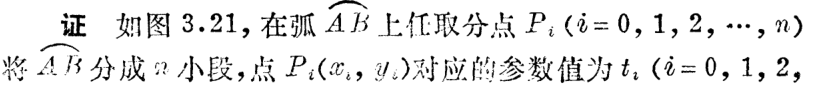 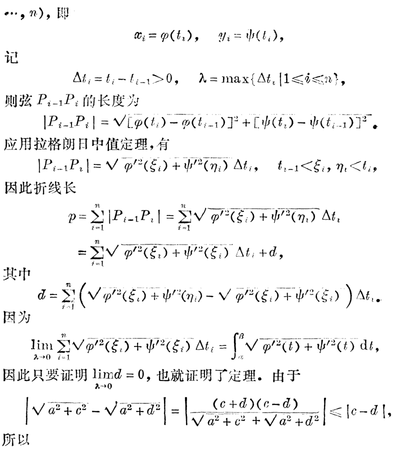 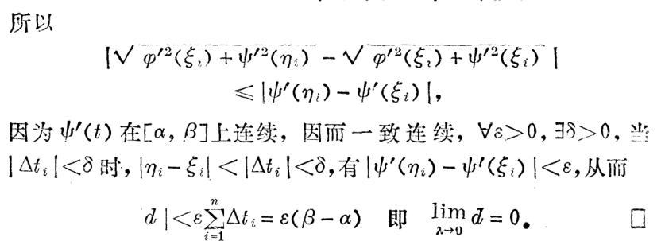
旋转面的面积
比如 \(f(x), a\le x\le b\) 绕 \(x\) 轴旋转得到的旋转体, 有 \[ \mathrm dS=2\pi f(x)\mathrm dL \] 故 \[ S=2\pi \int_a^b f(x)\sqrt{1+(f'(x))^2}\mathrm dx. \]
曲线的曲率
定义为: \(k=\left|\lim\limits_{\Delta s\to 0}\dfrac{\Delta \alpha}{\Delta s}\right|\), \(1/k\) 称为曲率半径.
公式为
\[ k = \dfrac{|y''|}{(1+y'^2)^{3/2}}. \]
广义积分的定义
无穷积分(第一类广义积分) 设 \(f(x)\) 在 \([a, +\infty]\) 上定义, 任取 \(b>a\), 若 \(f\) 在 \([a, b]\) 上都可积, 且极限 \[ I=\lim_{b\to +\infty}\int_a^bf(x)\mathrm dx \] 存在有限, 则称无穷积分 \(\displaystyle\int_a^{+\infty}f(x)\mathrm dx\) 收敛, 其积分值为 \(I\), 记作 \[ \int_a^{+\infty}f(x)\mathrm dx=\lim_{b\to +\infty}\int_a^bf(x)\mathrm dx. \] 否则称为发散. \(+\infty\) 称为奇点.
类似可定义 \[ \int_{-\infty}^bf(x)\mathrm dx=\lim_{a\to -\infty}\int_a^bf(x)\mathrm dx \]
若两个积分都收敛, 则称 \[ \int_{-\infty}^{+\infty}f(x)\mathrm dx=\int_{-\infty}^cf(x)\mathrm dx+\int_{c}^{+\infty}f(x)\mathrm dx \] 收敛, 否则称为发散. 多个奇点要分开!
Cauchy 收敛 若 \(\displaystyle I=\lim_{A\to +\infty} \int_{-A}^{A}f(x)\mathrm dx\) 收敛, 则称 \(\displaystyle\int_{-\infty}^{+\infty} f(x)\mathrm dx\) 是 Cauchy 收敛, \(I\) 称为它的 Cauchy 主值.
瑕积分(第二类广义积分) 考虑 \(f(x)\) 在 \([a, b]\) 上无界, 有 \(c\in[a, b]\) 是 \(f\) 的无穷间断点(称为奇点).
先考虑唯一奇点的情况:
若 \(x=b\) 是唯一奇点, 即 \(f(x)\) 在 \([a, b-\delta](\delta>0)\) 上可积, 且 \(\lim\limits_{x\to b-}|f(x)|=+\infty\), 若极限 \[ I=\lim_{\delta\to 0+}\int_a^{b-\delta}f(x)\mathrm dx \] 存在有限, 则称瑕积分 \(\displaystyle \int_a^bf(x)\mathrm dx\) 收敛, 积分值为 \(I\), 记作 \[ \int_a^bf(x)\mathrm dx=\lim_{\delta\to 0+}\int_a^{b-\delta}f(x)\mathrm dx. \] 否则称其发散.
类似地, 若 \(x=a\) 是唯一奇点, 则 \[ \int_a^bf(x)\mathrm dx=\lim_{\delta\to 0+}\int_{a+\delta}^bf(x)\mathrm dx. \]
若 \(c\in(a, b)\) 是唯一奇点, 则 \[ \int_a^bf(x)\mathrm dx=\int_a^cf(x)\mathrm dx+\int_c^bf(x)\mathrm dx. \] 当右侧两积分均收敛时, 才称左侧积分收敛, 否则发散. (多个奇点要分开!)
同样地, 若 \(\displaystyle I=\lim_{\delta\to 0+}\left(\int_a^{c-\delta}f(x)\mathrm dx+\int_{c+\delta}^bf(x)\mathrm dx\right)\) 收敛, 则称 \(\displaystyle\int_a^bf(x)\mathrm dx\) 是 Cauchy 收敛, \(I\) 称为它的 Cauchy 主值.
广义积分的牛顿-莱布尼兹公式 类似于常义积分的, 但是代入上下界时可能需要取极限.
对于瑕积分: 若原函数 \(F(x)\) 在 \([a, b]\) 上连续, 则不管 \(f\) 在 \([a, b]\) 上有几个分点, 积分均收敛, 且可用牛顿-莱布尼兹计算其值.
广义积分的性质
- \(\displaystyle \int_a^bf(x)\mathrm dx\)(\(b\) 是唯一奇点, 是无界的或者是 \(+\infty\)) 收敛 \(\Leftrightarrow\) \(\forall c\in (a, b)\), \(\displaystyle \int_c^bf(x)\mathrm dx\) 收敛, 且 \[ \int_a^b=\int_a^c+\int_c^b. \]
- 线性性.
- 换元积分与分部积分也适用.
- (Cauchy 收敛准则)
- \(\displaystyle\int_a^{+\infty}f(x)\mathrm dx\) 收敛 \(\Leftrightarrow\) \(\forall \varepsilon>0, \exists M>a\), 当 \(A'>A>M\) 时, 有 \(\displaystyle \left|\int_A^{A'}f(x)\mathrm dx\right|<\varepsilon\).
- \(\displaystyle\int_a^bf(x)\mathrm dx\)(\(b\) 为唯一瑕点)收敛 \(\Leftrightarrow\) \(\forall \varepsilon>0, \exists \delta >0\), 当 \(0<\eta'<\eta<\delta\) 时, 有 \(\displaystyle\left|\int_{b-\eta}^{b-\eta'}f(x)\mathrm dx\right|<\varepsilon\).
广义积分的审敛法
第一种 设 \(0\le f(x)\le g(x), a\le x< b\), \(b\) 是奇点.
- 若 \(\displaystyle \int_a^bg(x)\mathrm dx\) 收敛, 则 \(\displaystyle \int_a^bf(x)\mathrm dx\) 收敛, 且 \(\displaystyle \int_a^bf(x)\mathrm dx\le \int_a^bg(x)\mathrm dx\).
- 若 \(\displaystyle \int_a^bf(x)\mathrm dx\) 发散, 则 \(\displaystyle \int_a^bg(x)\mathrm dx\) 发散.
证明
2 是 1 的逆否, 故只证 1 即可.
一方面 \(\displaystyle\int_a^Af(x)\mathrm dx(a<A<b)\) 关于 \(A\) 单调递增; 另一方面, 它有上界 \(\displaystyle\int_a^bg(x)\mathrm dx\), 故极限存在, 故收敛.
第二种 (极限形式)
若在 \(b\) 的一个左邻域内有 \(f(x)\ge 0, g(x)> 0\), \(b\) 为唯一奇点, 且有 \[ \lim_{x\to b-}\dfrac{f(x)}{g(x)}=\lambda. \]
则:
- 当 \(0<\lambda<+\infty\) 时, \(\displaystyle\int_a^bf(x)\mathrm dx\) 与 \(\displaystyle\int_a^bg(x)\mathrm dx\) 有相同的敛散性.
- 当 \(\lambda=0\) 时, 由 \(\displaystyle\int_a^bg(x)\mathrm dx\) 收敛可推知 \(\displaystyle \int_a^bf(x)\mathrm dx\) 收敛.
- 当 \(\lambda=+\infty\) 时, 由 \(\displaystyle\int_a^bg(x)\mathrm dx\) 发散可推知 \(\displaystyle \int_a^bf(x)\mathrm dx\) 发散.
证明
利用极限的保号性易得.
第三种 (柯西审敛法)
对于无穷积分, 若 \(f(x)\) 在 \([a, +\infty)\) 上, 有 \(f(x)\ge 0\), 且 \(\displaystyle\lim_{x\to\infty}x^pf(x)=k\).
- 若 \(p>1\) 且 \(0\le k<+\infty\), 则 \(\displaystyle\int_a^{+\infty}f(x)\mathrm dx\) 收敛.
- 若 \(p\le 1\) 且 \(0<k\le +\infty\), 则 \(\displaystyle\int_a^{+\infty}f(x)\mathrm dx\) 发散.
对于瑕积分, 若 \(f(x)\) 在 \([a, b)\) 上有 \(f(x)\ge 0\), \(b\) 为唯一瑕点, 且 \(\displaystyle \lim_{x\to b-}(b-x)^pf(x)=k\).
- 若 \(p<1\) 且 \(0\le k<+\infty\), 则 \(\displaystyle\int_a^bf(x)\mathrm dx\) 收敛.
- 若 \(p\ge 1\) 且 \(0<k\le +\infty\), 则 \(\displaystyle\int_a^bf(x)\mathrm dx\) 发散.
证明
由第二种与 \(x^p, (b-x)^p\) 的敛散性可得.
第四种 (狄利克雷判别法)
若 \(\displaystyle F(A)=\int_a^Af(x)\mathrm dx\) 在 \([a, b)\) 上有界, \(g(x)\) 在 \([a, b)\) 上单调且 \(\displaystyle\lim_{x\to b-}g(x)=0\), 则 \(\displaystyle\int_a^{b}f(x)g(x)\mathrm dx\) (\(b\) 为唯一奇点) 收敛.
第五种 (阿贝尔判别法)
若 \(\displaystyle \int_a^{b}f(x)\) 收敛(\(b\) 为唯一奇点), \(g(x)\) 在 \([a, +\infty)\) 上单调有界, 则 \(\displaystyle\int_a^bf(x)g(x)\mathrm dx\) 收敛.
拓展内容
华利斯公式
展开图片
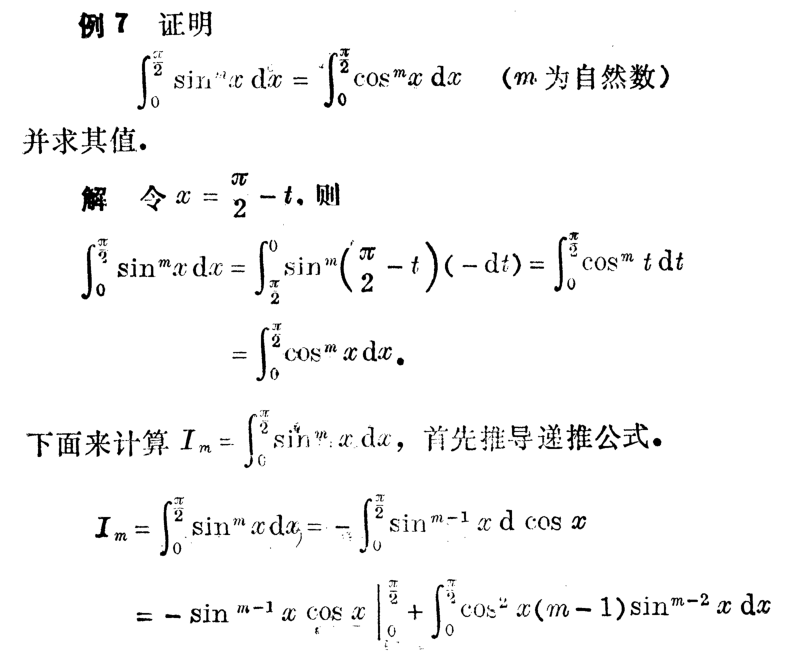 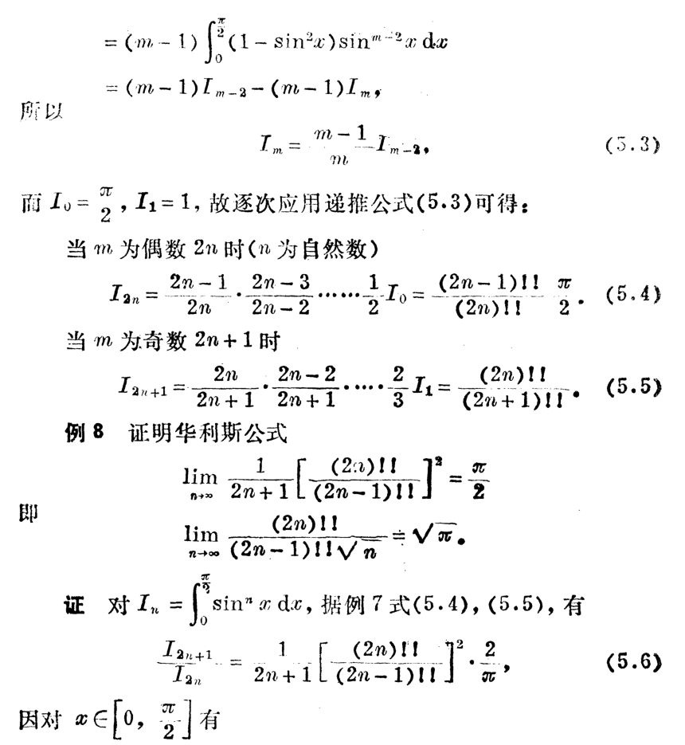 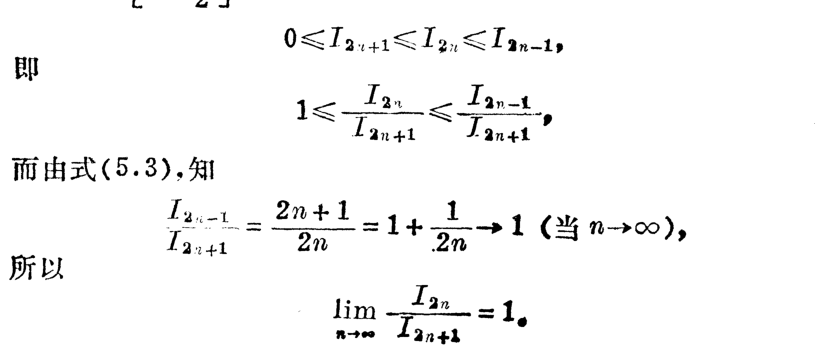
泰勒公式的积分型余项
展开图片
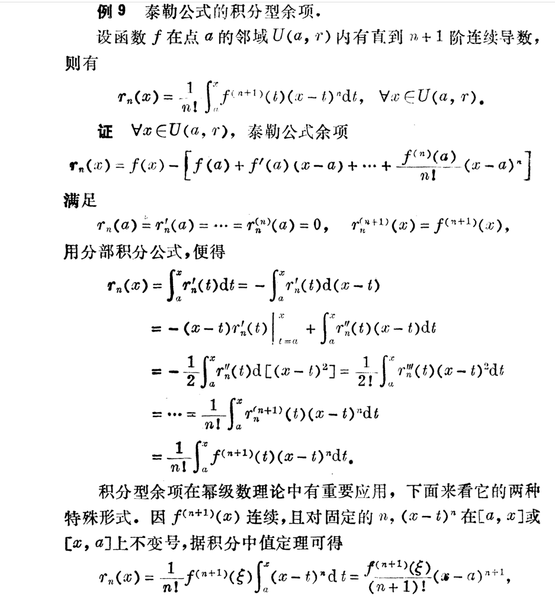 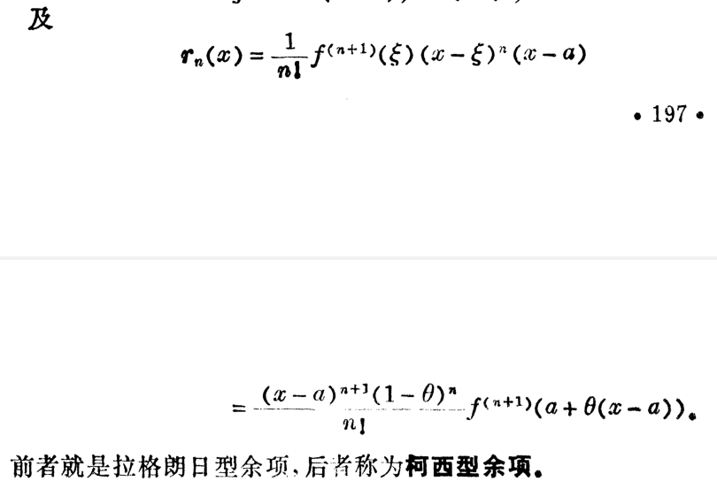